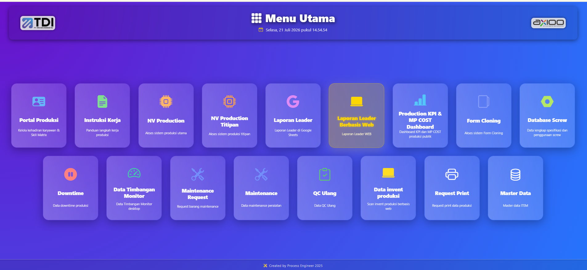
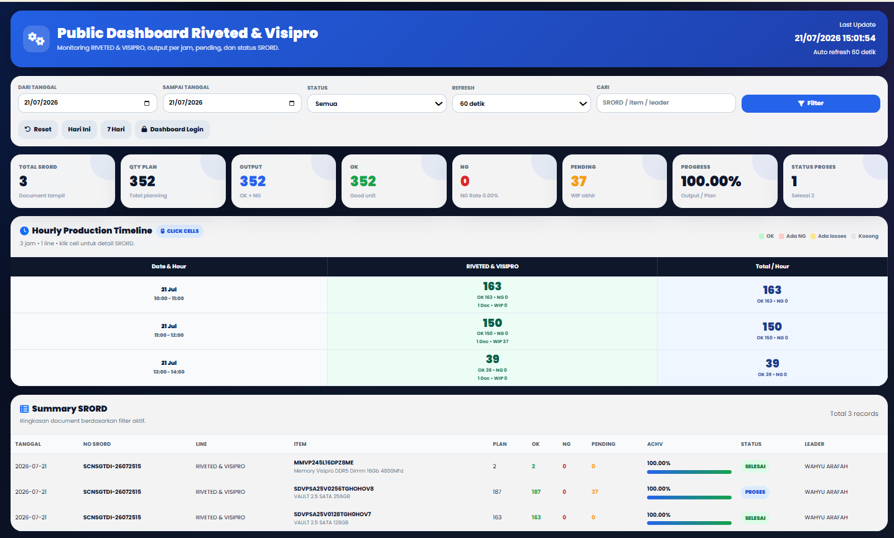
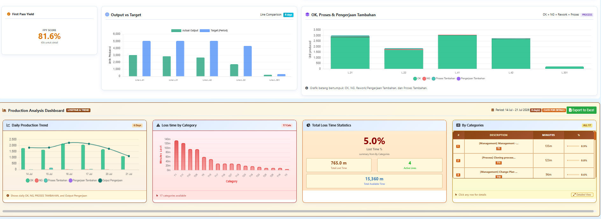
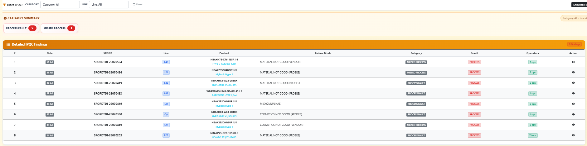

Jakarta, Indonesia · Open to collaboration
MANUFACTURING · DATA · DIGITALIZATION
I turn production challenges into measurable solutions.
A Staff Process Engineer with hands-on shop-floor experience, focused on process improvement, production data analysis, KPI dashboards, automation, and manufacturing system development.

Current Role
Staff Process Engineer
CoreProcess Improvement
CapabilityProduction Analytics
ApproachBuild. Measure. Improve.
PROCESS ENGINEERINGCONTINUOUS IMPROVEMENT
KPI DASHBOARDPRODUCTION AUTOMATION
DATA ANALYSISDIGITAL MANUFACTURING
01 / ABOUT
Hands-on experience, an engineering mindset, and digital capability.
I understand processes not only through reports, but through direct experience operating, inspecting, troubleshooting, and improving production workflows.
MY JOURNEY
From the shop floor to process engineering.
My career began as a Production Operator in a Quality Control function, continued as a Technician, and later returned to quality operations before progressing into a Staff Process Engineer role in July 2025.
That journey shaped how I work: understanding operator needs, interpreting data, identifying root causes, and building practical solutions that people can actually use.
WORKING PRINCIPLE
“The best solution is not the most complicated one, but the one that delivers the clearest value on the shop floor.”
HOW I WORK
Discover
Understand the current condition and user needs.
Measure
Use data, cycle time, KPIs, and process evidence.
Improve
Test the solution, standardize the process, and monitor the results.
CURRENT FOCUS
Process ImprovementProduction KPICycle Time
Work InstructionData VisualizationInternal Systems
AutomationTraceability
02 / EXPERIENCE
A career built through real operational experience.
Each role strengthened my perspective on quality, technical problem-solving, people, and process.
Jul 2025 — Present
PT Tera Data Indonusa · AxiooCURRENT
Staff Process Engineer
Support process improvement through cycle-time analysis, line balancing, work instructions, production trials, problem-solving, digitalization, and KPI monitoring.
Process ImprovementCycle TimeDigitalizationKPI
Apr 2024 — Jul 2025
PT Tera Data Indonusa · Axioo
Production Operator — Quality Control Function
Performed quality inspections, product function validation, standards compliance checks, abnormality identification, and cross-functional finding coordination.
Quality ControlProduct ValidationStandards
Dec 2023 — Apr 2024
PT Tera Data Indonusa · Axioo
Technician
Performed technical troubleshooting, failure analysis, unit repair, and post-repair verification to ensure product quality.
TroubleshootingRepair AnalysisTechnical Support
Apr 2022 — Dec 2023
PT Tera Data Indonusa · Axioo
Production Operator — Quality Control Function
Built a strong manufacturing foundation through production activities, quality awareness, output targets, process discipline, and line collaboration.
ManufacturingQuality AwarenessTeamwork
In Progress
Universitas Pamulang
Informatics Engineering
Developing capabilities in software engineering, databases, mobile development, artificial intelligence, IoT, and data-driven system development.
Software EngineeringDatabaseAIIoT
03 / PROJECTS
Systems built to solve operational problems.
Open each project to explore the context, solution, impact, and technology stack.

Cleaning Stock Management System
An inventory system that manages item masters, requests, incoming and outgoing goods, low-stock conditions, monthly reports, and user access in one workflow.
Real-time stock visibility
Low-stock status & alerts
Request and transaction tracking
PHPMySQLJavaScriptInventory System
 KPI & Reporting
KPI & Reporting
Production & Leader Dashboard
Monitors targets, output, hourly production timelines, WIP, rework, loss time, and line performance in a concise operational view.
 Standardization
Standardization
Digital Work Instruction System
A digital work instruction system structured by product family, model, process, station, visual work steps, quality standards, tools, cycle time, and revision control.
 Performance
Performance
Production KPI Dashboard
Visualizes operational health, monthly trends, focus areas, achievement, and key issues to support management reviews.
 Maintenance
Maintenance
Maintenance Summary Dashboard
Tracks maintenance projects, follow-up actions, equipment condition, inspection results, evidence, and operational readiness.
 Cost Analytics
Cost Analytics
Manpower Cost Dashboard
Connects production output, total manpower cost, and cost per unit to identify trends, compare actual performance with targets, and highlight areas requiring attention.
04 / GALLERY
Production & Leader Dashboard Gallery
A collection of dashboards I built for production monitoring, leader reporting, PPIC, repair, IPQC, and OQC. This gallery demonstrates the breadth of systems I have developed for manufacturing operations.
DASHBOARD ECOSYSTEM
A visual ecosystem for faster operational decisions.
From an internal application hub and public production monitoring to repair flow, PPIC in-transit material, production analysis, and quality dashboards. Each interface is designed to make critical information easy to read and practical for operational teams.

Leader ToolsInternal Operations Hub
A central access point for production portals, leader reports, maintenance, QC recheck, inventory, and print requests.
 Production Automation
Production Automation
Clone Scanner — SSD / NVMe Detector
A desktop utility for validating serial numbers, firmware, drive health, capacity, Windows builds, and boot results after the cloning process.

Production MonitoringPublic Dashboard Riveted & Visipro
Monitors hourly output, total plan, pending quantity, progress, and SRORD summaries in a single view.
 Repair Flow
Repair Flow
Repair Combined Public Dashboard
Visualizes opening balance, quantity in, quantity out, and remaining balance for each repair area.
 PPIC & Material
PPIC & Material
PPIC Dashboard — Intransit Material
Tracks in-transit material, verification status, warehouse distribution, line distribution, and top items.

Leader DashboardProduction Analysis Dashboard
Displays first pass yield, output versus target, production trends, loss time, and downtime categories.
 IPQC Insight
IPQC Insight
IPQC Findings & Quality Data
An IPQC findings dashboard showing total findings, involved operators, production lines, and user rankings.

Traceability ViewDetailed IPQC Findings
A detailed IPQC findings table covering dates, SRORD, lines, products, failure modes, categories, results, and operators.
 OQC Monitoring
OQC Monitoring
OQC Outgoing Quality Control
OQC defect analysis covering total defects, failure rate, defects by line, cause summaries, and top users.
05 / SKILLS
A combination of engineering, analytics, and software development.
I use technology as a practical tool to clarify processes, accelerate analysis, and strengthen operational control.
01
Process Engineering
02
Data & Performance
03
Software Development
04
Manufacturing Digitalization
06 / LET'S CONNECT
Have a process challenge or a digitalization idea?
Let’s discuss process improvement, production analytics, manufacturing systems, or professional collaboration.